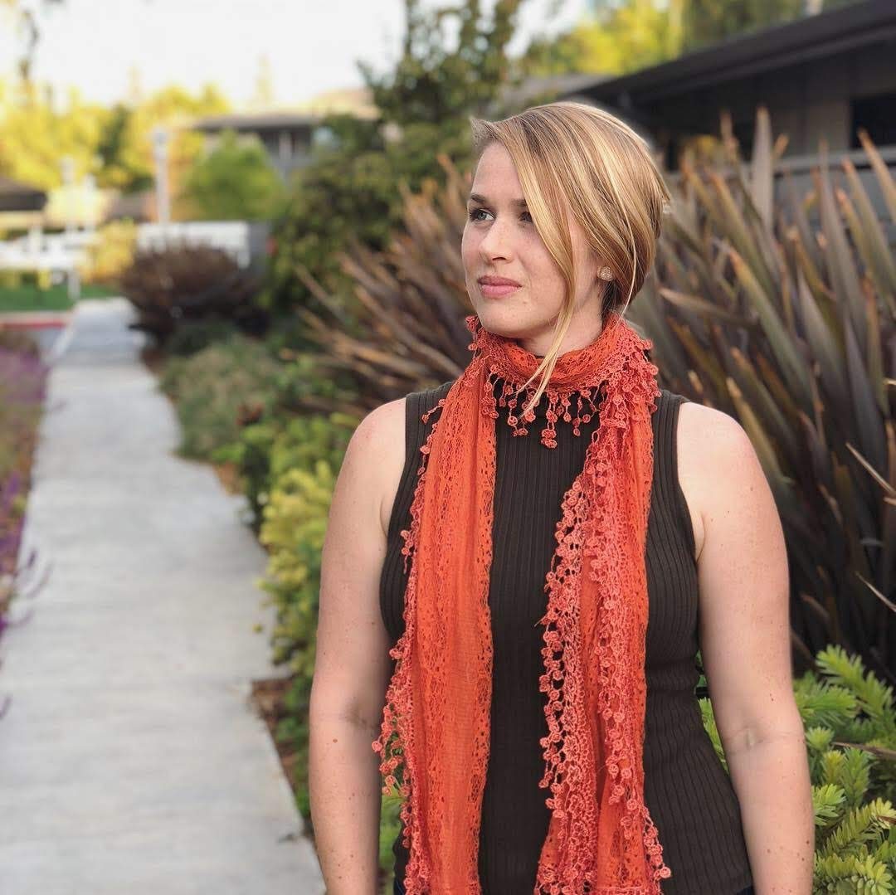
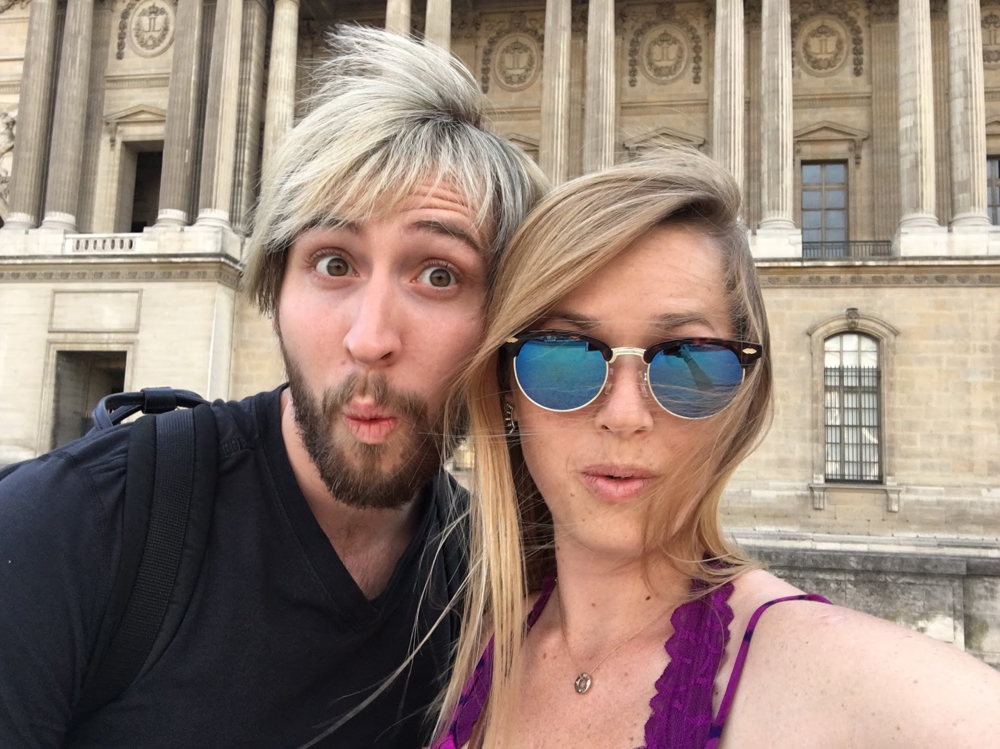
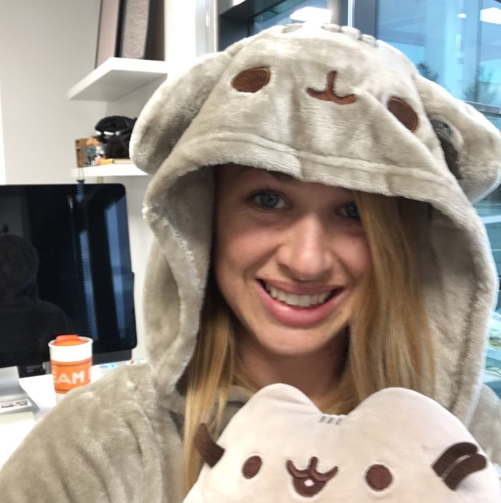

Principal Design & Research Manager at Microsoft, leading design strategy for generative AI-powered experiences. Passionate about building strong teams, championing user-centered design, and pushing the boundaries of what's possible with AI.
Over 10 years at Microsoft, I've led design for products used by hundreds of millions — from AI-powered creativity tools to enterprise collaboration experiences.
Leading design and research for a 0-to-1 product team launching a transformative learning experience powered by AI. Building a high-performing, inclusive team within an org shifting from service-oriented to product-driven.
Led the integration of Microsoft Designer's Editor canvas into Copilot chat for AI-driven image generation and editing. Featured in Microsoft's first Super Bowl campaign in years.
Co-led the pitch to Microsoft SLT and Satya Nadella, securing funding for a new M365 app to compete in the Creator Economy. Designed and shipped the core AI-powered Editor experience.
Spearheaded the integration of PowerPoint into Microsoft Teams and led development of remote presenting tools during the pandemic, keeping Microsoft relevant in hybrid work.
Pioneered AI solutions within PowerPoint — auto-magically designing slides, coaching speakers to improve their skills, and creating more inclusive presentation experiences.
Detailed case studies from my earlier career — government, enterprise startup, and bootstrapped products used by millions.
Real time logistics visibility that helps Logistic managers be more proactive and spend less time tracking down spreadsheets.
Read the case study →Designing a control room to inspire collaboration between operational teams.
Read the case study →Helping Students make smarter financial decisions about college.
Read the case study →A new type of government report—a living document, an online interactive report—for the CFPB to send to Congress
Read the case study →Thoughts on design, UX career development, and building products that people love.
Co-authored a step-by-step guide to finding your next UX job. After reaching our sales goal, we opened it up publicly on Medium.
Read on Medium →A deep dive into the customer-centered design process behind Microsoft StaffHub, an Office 365 product for firstline workers.
Read on Medium →A survey of the best prototyping tools available for interaction designers to bring ideas to life quickly.
Read article →Inventions I've contributed to across supply chain technology and AI-powered productivity tools.
Microsoft
Systems and methods for analyzing presenter content and audience reactions in real-time using ML models, generating feedback to improve online presentations.
Co-inventors: K. Seleskerov, A. Srivastava, D. Johnson, P. Sinha, G. Wu, B. Mederos
Elementum SCM
Graph-based data structures for tracking shipments and detecting delays across supply chain networks for Fortune 500 companies.
Co-inventors: S. Guruswamy, D. Martin, B. Mederos, et al.
Side projects and studios I've built alongside my full-time work.
A tiny product studio that builds tools and backs purpose-driven teams making great health more accessible for everyone — starting with families and their communities.
Visit Enchant →Co-founded and ran a venture from 2019 to 2023, exploring new ideas at the intersection of design, community, and technology.